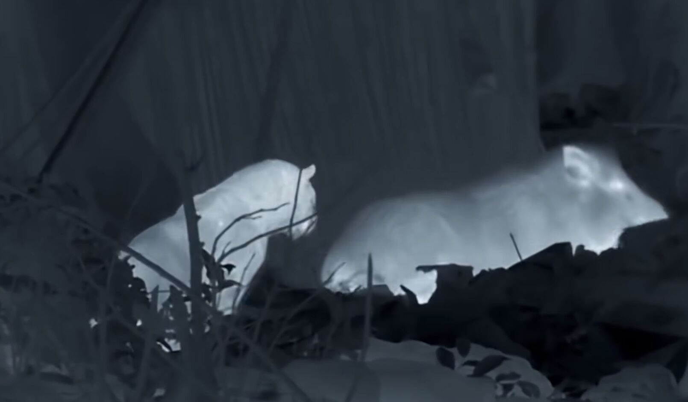
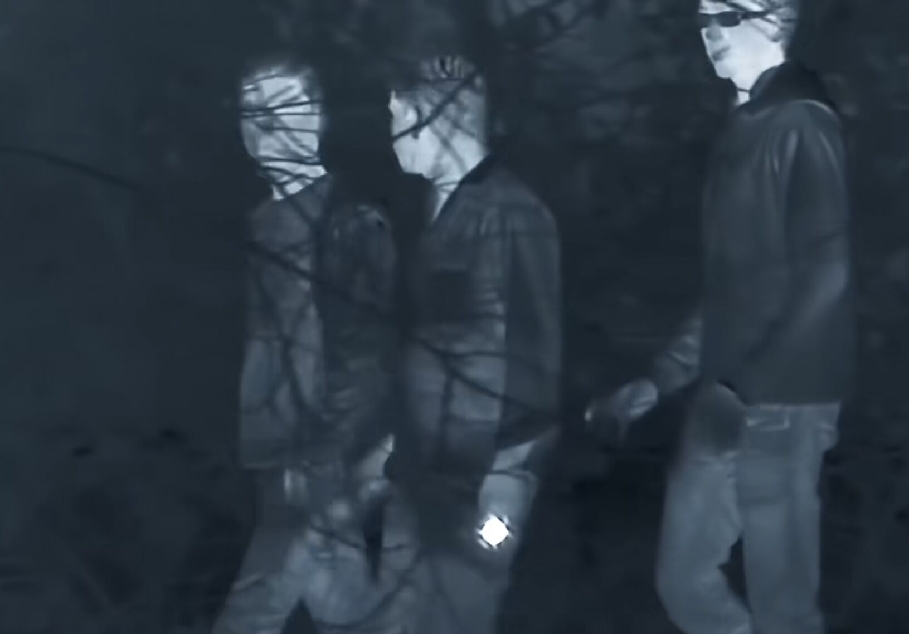

夜间偷窥法
不管是“莽夫”、“伏地魔”、还是“间谍”拍动物，拍摄时间都集中在白天。但有些动物晚上才出门吃点“夜宵”，所以想在夜间“偷窥”，还得用到更高级的设备。起初，夜间拍摄使用的是加了滤光片、对红外光敏感的红外摄像机，这是因为大部分动物和人类都看不到波长更长的红外光。但是，红外打光灯又大又耗电，所以这种方法仍然有改造空间。如果要拍摄，肯定需要打光，如果我们没办法主动发光，那就只能去看见动物本身的光。在第二种方法中已经提到过，物体只要有温度就会向外辐射热量，不方便的时候，我们就需要像蝮蛇颊窝一样能感知红外光的热成像仪。这下，谁都藏不住了！注意，这里的“谁”有双关之意，因为热成像仪不仅能用来看动物，还能用来发现藏在草丛里的人类盗猎者，顺便保护野生动物。

在夜晚活动的动物

人类盗猎者本网站部分文字内容及图片来自哔哩哔哩up主吟游诗人基德，视频网址：https://www.bilibili.com/video/BV14V4y137tG/?share_source=copy_web